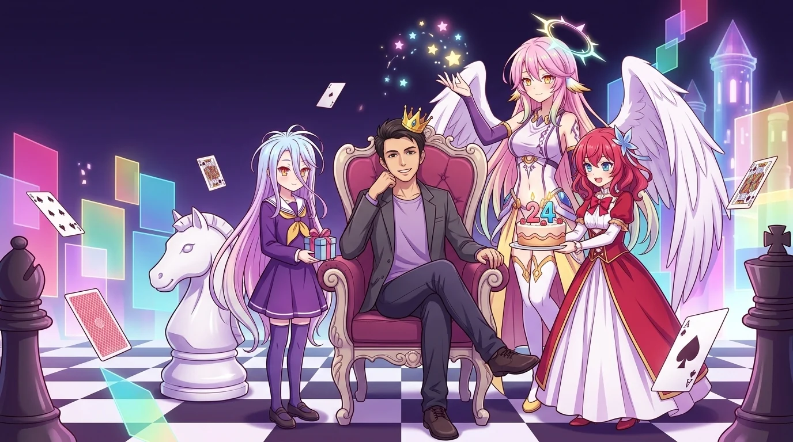
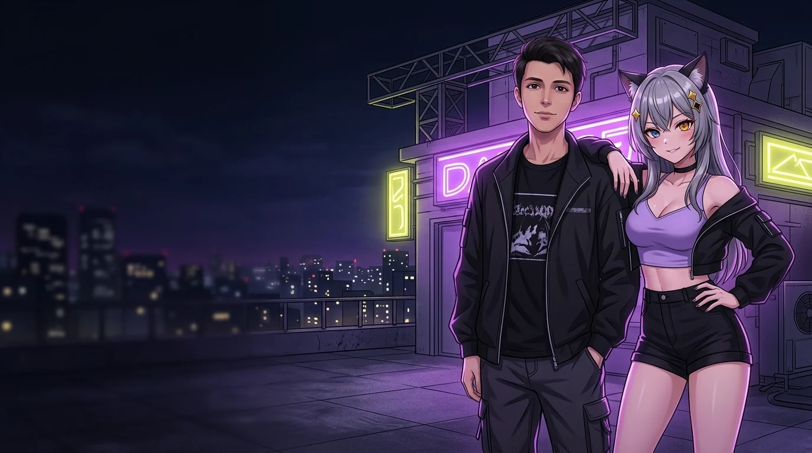

ПРОЛОГ01
ПЕРВЫЙ КУРС
Физра.
Волейбол.
Просто знакомые.
Я чаще был рядом с Дауреном. Ты казался мне скрытным. Я тебе — не очень общительным.
«Именно на физре»Вспоминали 05.12.2023
ОСОБЫЙ ЭПИЗОД / 02 ОКТЯБРЯ
У каждого героя есть любимые миры.
А у нас с тобой — своя история.

DISBOARD / BIRTHDAY EDITION01 / ПЕРВАЯ АРКА
Когда-то мы просто знали друг друга.
И ни один из нас не знал, куда всё это приведёт.
ПЕРВЫЙ КУРС
Я чаще был рядом с Дауреном. Ты казался мне скрытным. Я тебе — не очень общительным.
«Именно на физре»Вспоминали 05.12.2023
ДИПЛОМКА / НОРМОКОНТРОЛЬ
Так я вспоминал наше первое личное сообщение и встречу после него. Обычные учебные дела — начало совсем не обычной истории.
«Я начал с вами общаться плотно только после того как в группу общую добавился»Даня · 05.05.2024
В этом разговоре появился и Шаха. Дальше общения становилось больше. А мы постепенно становились своими.
Кто мог подумать что станем лучшими друзьями
Рил
Два сообщения. И вся наша история между ними.
02 / ТВОЯ ВСЕЛЕННАЯ
«Нет игры — нет жизни», «Наруто», манга и игры.
Твои любимые миры встречаются здесь.
Этот эпизод посвящён тебе.
Ты рассказывал об этом порядке просмотра. Даже вход в историю у тебя получился со своим сюжетным поворотом.
«Походу ты будешь тем самым другом который подсадил меня на аниме»Я · 21.11.2023
Обсуждали, что читать, и успевали придумать собственную терминологию. В последний день этого архива — очередная новая версия.
«Одобрено третьим мангистом»Я · 30.09.2026
«А чё не мангуст»Даня · 30.09.2026
После поздравления в 2025-м ты уже звал меня в «Геншин». Можно было выбрать босса — или просто остаться вместе в игре.
«Я тебе любых боссов ваншотну»Даня · 02.10.2025
Тот самый человек, которому можно написать: «Кс ехало».
BONUS ARC / ТЫ В КАЖДОЙ ВСЕЛЕННОЙ
Сегодня сценарий на твоей стороне.
В каждой арке тебя уже ждут.
Нажми на сцену — открой её целиком ↙
Даня, сегодня ты главный герой. Забирай лучший вечер, самые яркие впечатления и поздравления — всё твоё.
Я кое-что приготовила для тебя. Пусть в новой главе будет больше приятных сюрпризов. С днём рождения, Даня!
Улыбнись, Даня. Этот день нужно сохранить! Желаю тебе поводов улыбаться гораздо чаще — и людей, с которыми легко быть собой.
С днём рождения, Даня. Пусть самые смелые планы сбываются, а рядом всегда будут те, кто верит в тебя. Сегодня все огни для тебя.
03 / ПОНЯТНО ТОЛЬКО НАМ
Со стороны — странные сообщения.
Для нас — привычный способ быть рядом.
Нажми на карточки и открой их смысл ↙
04 / РЕЖИМ КООПЕРАТИВА
У нашей истории хватает обычных задач.
Учёба, код, работа, документы.
Иногда самая важная помощь умещается в одну строчку.
«Гуд, тогда сам сделаю»
Твой ответ после предложения помочь с кодом.
«Скинь мне я помогу»
Мой ответ, когда тебе понадобилось быстро всё подготовить.
«Доехали?»
Вы с Розиком только сели в последний старикс. Я пожелал хорошего пути.

SPECIAL ENDING / ПОСЛЕ ТИТРОВ
Эту главу ты проходишь не один.
05 / ЕЖЕГОДНЫЙ СПЕЦЭПИЗОД
Каждый год — ещё один способ сказать,
как я рад, что ты есть в моей жизни.
Хотел поздравить в 00:00. Получилось утром. Но самые важные слова всё равно написал.
«Я очень рад что встретил такого человека как ты в своей жизни»
Поздравление прилетело вовремя. А вход в него стал отдельным приключением.
«Сказано же ввести пароль, я ввел 😭»
В этот раз хотелось собрать то, в чём ты узнаешь и себя, и нас.
Открыть новую главуHIDDEN BONUS / ДЛЯ СВОЕГО ЧЕЛОВЕКА
Нажми на подарок. Эта сцена — только для тебя.
Редкая находка. Уже в моей жизни.
Спасибо, что это ты, Даня.
06 / БЕЗ ШУТКИ СЛЕДОМ
«Так что ценю
время пока могу»
Даня, сегодня хочу сказать это без шутки следом.
Я ценю время с тобой. Наши разговоры, наш смех и возможность просто позвать тебя играть. Спасибо, что из знакомого с физры стал моим лучшим другом.
Пусть у тебя будет много счастливых дней, интересных дел и людей, рядом с которыми тебе хорошо. А у нас — ещё много историй, которые однажды начнутся словами: «Помнишь?..»
С днём рождения, Пикачупсик.
И да. Когда досмотришь — залетай.
Продолжение следует.